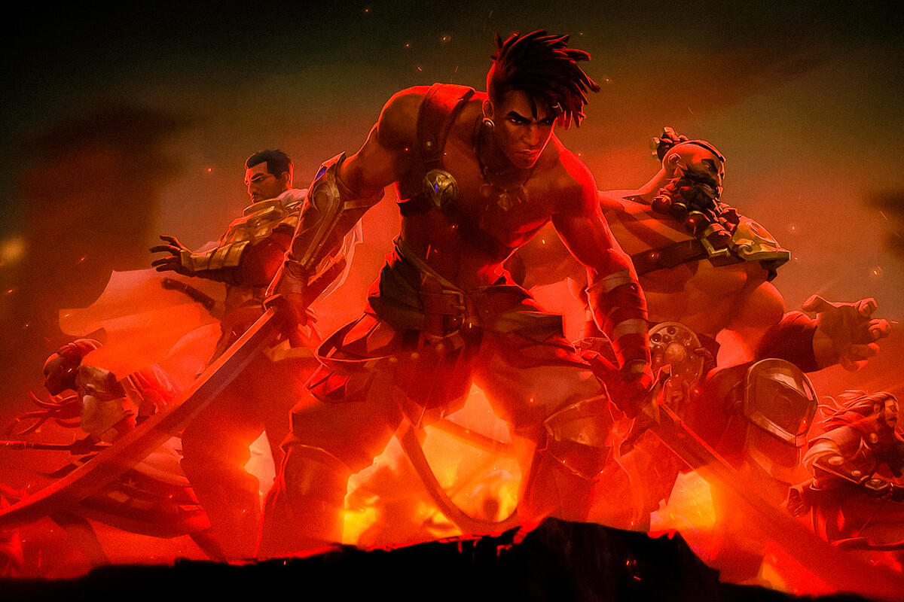

Análisis de Prince of Persia The Lost Crown. Si lo dejas pasar te estarás perdiendo uno de los mejores (y más difíciles) juegos de acción de los últimos años
Los creadores de Rayman Legends revitalizan la saga PoP con un juego de plataformas y combates a la altura de los mejores del género
No tenía dudas de que en Ubisoft Montpellier iban a hacer un gran trabajo. Después de todo, nos maravillaron con videojuegos como Rayman Legends. De hecho, su experiencia en este tipo de juegos plataformeros 2D es lo que explica el enfoque adoptado en esta ocasión, un metroidvania que algunos veían con recelo, pero puedo aseguraros desde ya que se erige como uno de los mejores exponentes del género. He quedado maravillado por la destreza del equipo de desarrollo, en una aventura que aunque ya me convenció en la preview que pude jugar hace unas semanas, ahora que lo he completado no puedo dejar de pensar en las horas de diversión que me ha proporcionado. Prince of Persia: The Lost Crown es una aventura que puede llegar a ser extremadamente retante, que tiene una duración más que adecuada (en torno a 25 horas) y que encima cuenta con unos valores de producción adecuados, además de una trama interesante de seguir. Es un juego que encima va de menos a más, que te sorprende con planteamientos de exploración, plataformeros y combativos cada vez más inspirados y desafiantes. Además, es más respetuoso con la licencia PoP de lo que muchos podrían pensar, y no solamente por volver al espíritu clásico de la saga, sino por los saltos, las trampas y unos escenarios que al final son protagonistas absolutos de la acción.
Un viaje en el tiempo… modernizado
En un metroidvania el diseño del escenario es fundamental, y el que he visto en PoP: The Lost Crown es uno de los más laberínticos e intrincados que me he encontrado dentro del género. Esperaba un enfoque ligero en este sentido, pero nada de eso. El Monte Qaf se convierte en protagonista de la aventura, con una amplísima variedad de escenarios y una atmósfera de misterio que se acentúa cuando descubres que el lugar está maldito y el tiempo no sigue su discurrir natural (los fans de videojuegos como POP: Las Arenas del Tiempo encontrarán numerosas referencias). Prince of Persia: The Lost Crown El juego contiene unas cuantas cinemáticas y momentos narrativos memorables A este respecto, la trama ya se hace interesante por este enfoque, el de conocer qué ocurre en esta intrigante ciudad. Nos ponemos en el lugar de Sargon, uno de los Siete Inmortales, a quien se ha encomendado la tarea de encontrar al príncipe Ghassan, secuestrado en extrañas circunstancias. Gran parte de la aventura se construye en torno a este objetivo, aunque hay giros narrativos, cosas sorprendentes y, en general, una trama interesante de seguir. Tal vez no es todo lo brillante que podría haber sido en la forma de construir el relato (y personalmente esperaba algo más de su desenlace), pero creo que da la talla, contiene un buen puñado de cinemáticas y ofrece un viaje muy satisfactorio. Yo agradezco este enfoque. Prefiero una trama ligera y fácil de seguir en este tipo de juegos, principalmente porque el interés debe recaer sobre el escenario y cómo guía nuestro avance a través de la aventura. Eso PoP: The Lost Crown lo consigue de manera espectacular, como si Ubisoft Montpellier llevara haciendo metroidvanias desde hace décadas. Se nota que se han fijado en los referentes del género, pero sin olvidar la esencia de Prince of Persia, insertando todo aquello que distingue a esta franquicia, desde saltos ajustadísimos hasta una acción combativa ágil y extremadamente variada.